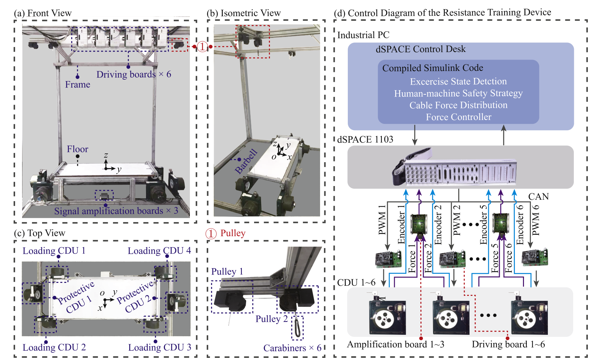
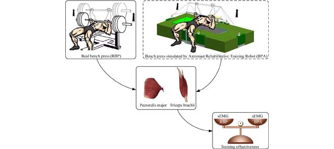
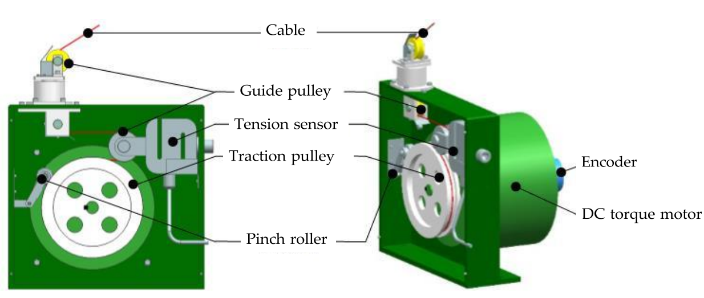
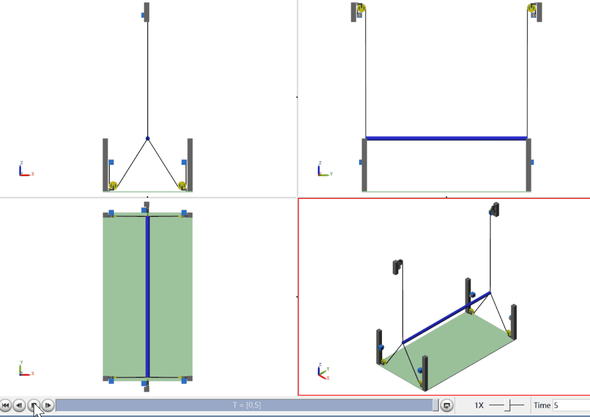
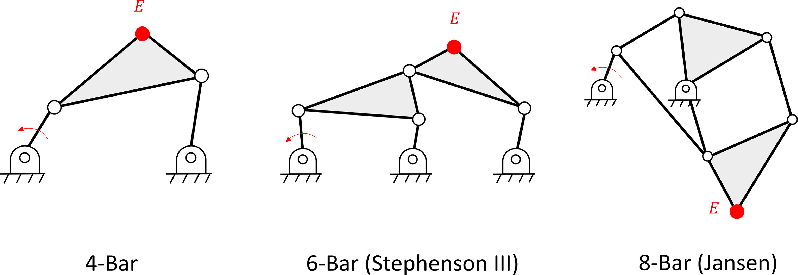
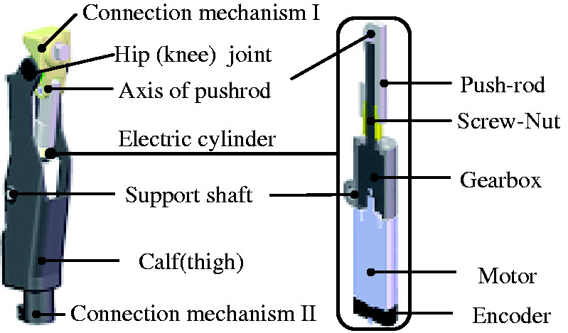
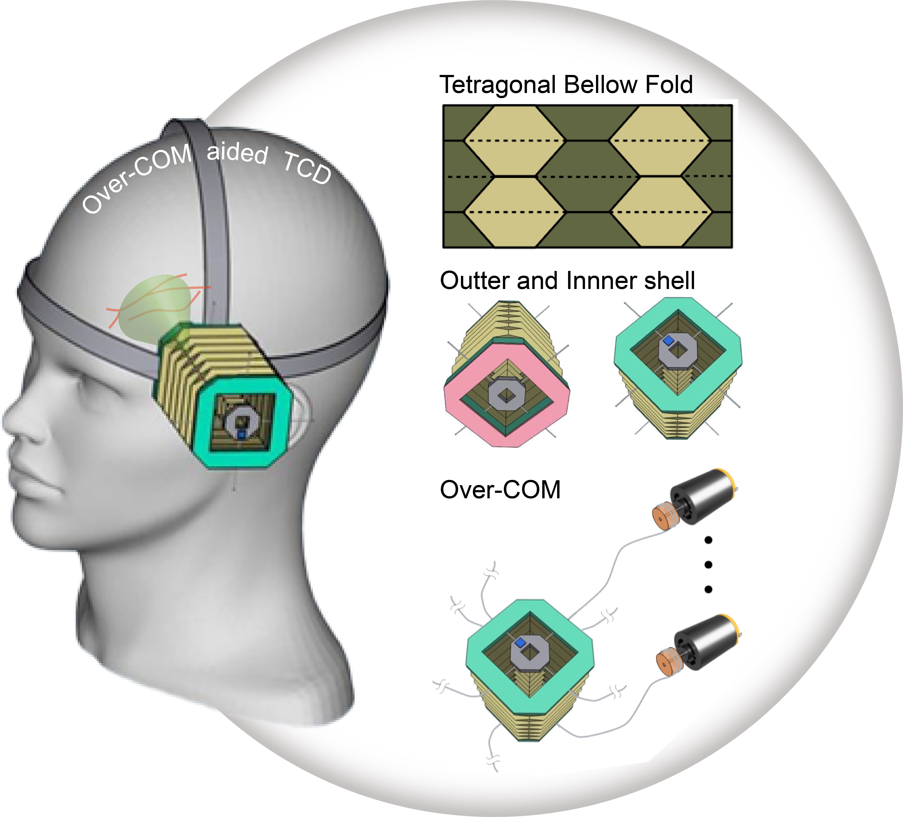
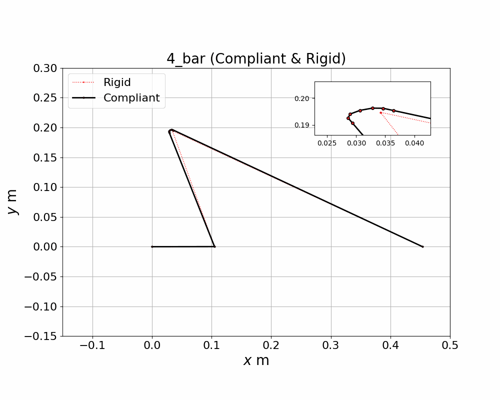

About
I am currently an Assistant Professor in the Department of Mechatronic Engineering at Harbin University of Science and Technology. I received my Ph.D. in Mechanical Engineering from Harbin Engineering University in May 2020 under the supervision of Prof. Lixun Zhang, with joint doctoral training at The University of Texas at Austin under Prof. James Sulzer (2017–2018). Prior to my current faculty appointment, I conducted postdoctoral research at Harbin Institute of Technology (2020–2022), visited Kochi University of Technology in Japan (2021), and worked as a Postdoctoral Fellow and Assistant Research Fellow in Prof. Hongliang Ren's Lab at The Chinese University of Hong Kong (2022–2024).
My research centers on Physical Human-Robot Interaction (pHRI), force and impedance control of redundant multi-DOF cable-driven robots, and biomechanics-informed wearable systems for enhancing human physical functions. Across rehabilitation, daily assistance, and microgravity exercise countermeasures, my work aims to enable multi-DOF robotic systems to safely, accurately, and interactively couple with human musculoskeletal dynamics.
Research Focus
Force/Impedance Control & Safety
Disturbance-invariant force tracking and finite-state impedance safety architectures for multi-DOF cable-driven pHRI systems.
Musculoskeletal Coupling
Coupled human-robot biomechanical modeling and pseudospectral optimal load planning to protect joints while preserving muscle stimulus.
Wearable Assistive Interfaces
Multimodal grasp intent inference and tendon-driven hand exoskeletons for continuous, assist-as-needed physical support.
Selected Research Projects
1. Multi-DOF Cable-Driven Robotics & Active pHRI Safety
Designed, modeled, and prototyped redundant cable-driven robotic systems for human physical conditioning and functional augmentation, integrating structural-invariance velocity feedforward force control (<3 N RMSE) and a three-state FSM impedance safety strategy.





2. Musculoskeletal Optimal Control & Phase-Dependent Load Planning
Coupled multi-segment human limb dynamics with an 11-muscle biomechanical model solved via the Radau Pseudospectral Method (RPM) and validated with sEMG, demonstrating phase-dependent load modulation that reduces peak joint reaction forces while maintaining muscular training stimulus.


3. Wearable Exoskeletons & Gait Rehabilitation Mechanisms
Synthesized adjustable 1-DOF multi-bar linkage gait trainers across gait records of over 100 subjects and developed powered/cable-driven lower-limb and hand exoskeletons for motor rehabilitation and daily physical assistance.




4. Collapsible Origami & Compliant Medical Mechanisms
Developed collapsible origami-inspired overhead mounting structures for surgical/medical instruments and investigated compliant chained mechanisms for gastrointestinal capsule endoscopy.



Selected Publications
Journal Articles & Book Chapters
Conference Papers
Teaching & Intellectual Property
Courses Taught (HUST)
- Robotics (Undergraduate Core Course)
- Hydraulic and Pneumatic Transmission (Undergraduate)
- Hydraulic Servo Control and MATLAB Simulation (Graduate)
Patent Application
- Cable-driven hand exoskeleton with pneumatic interlayer jamming (First Inventor, Chinese Invention Patent Application, 2026) — Assists finger flexion and extension via multilayer spring sheets, pneumatic interlayer friction modulation, and tendon actuation.